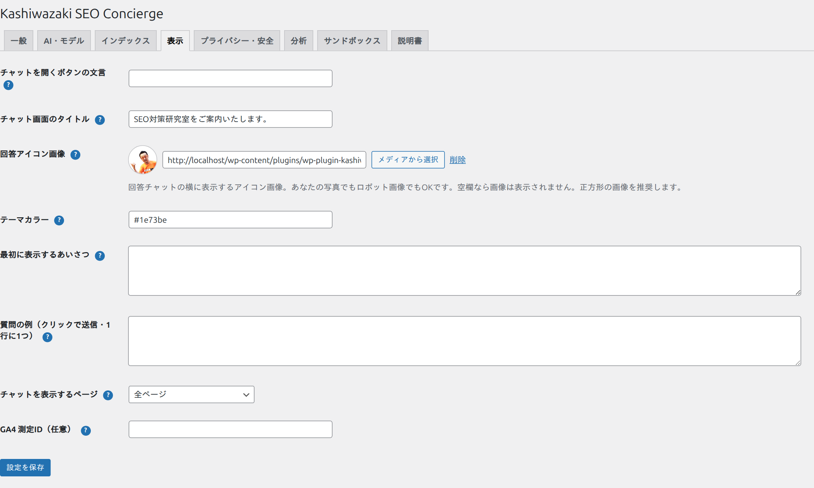
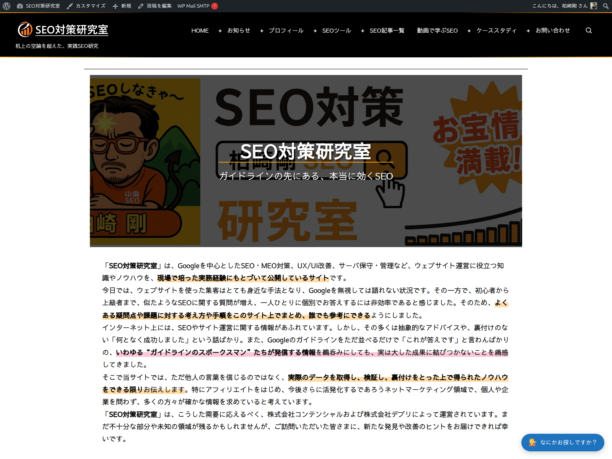

表示カスタマイズ
「表示」タブでは、チャットの見た目や文言を自由に変えられます。難しい設定はなく、文字や色を入力するだけです。

設定できる項目
| 項目 | 説明 |
|---|---|
| チャットを開くボタンの文言 | 画面右下のボタンの文字。空欄なら「なにかお探しですか？」になります。 |
| チャット画面のタイトル | チャットを開いたとき上部に出る見出し。空欄なら「Kashiwazaki SEO Concierge」。例:「〇〇をご案内いたします。」 |
| 回答アイコン画像 | ボットの回答の横に出すアイコン。ロボットの絵でも、ご自身の顔写真でもOK。「メディアから選択」で画像を選べます。空欄なら表示されません。 |
| テーマカラー | チャットの色。#1e73be のような「#」付きのカラーコードで指定します。 |
| 最初に表示するあいさつ | チャットを開いたとき最初に出るメッセージ。 |
| 質問の例（クリックで送信） | 入力欄の上に出す質問例。1行に1つ。訪問者がクリックするとその質問が送られます。 |
| チャットを表示するページ | 全ページ／トップページのみ／個別の投稿・固定ページのみ、から選べます。通常は「全ページ」でOK。 |
| GA4 測定ID（任意） | Googleアナリティクス4で利用状況を計測する場合のID（G-XXXXXXX）。不要なら空欄でOK。 |
回答アイコン画像の設定手順
1
「回答アイコン画像」の「メディアから選択」ボタンを押します。
2
WordPressのメディアライブラリから画像を選ぶ（または新しくアップロード）。正方形の画像がおすすめです。
3
プレビューを確認して「設定を保存」。チャットの回答の横に表示されます。
パソコンでの表示
パソコン（広い画面）では、右下に文言入りの横長ボタン（ピル型）が表示されます。クリックするとチャットが開きます。
スマートフォンでの表示
画面幅が狭いスマホでは、横長のボタンだと他の固定ボタン（ページトップへ戻る等）と重なってしまいます。そこでスマホでは、自動的に小さな丸い「💁」ボタンになり、タップするとチャットがふわっと開きます。設定は不要で、自動で切り替わります。

（任意）GA4で記録されるイベント
「GA4 測定ID」を設定すると、チャットの利用状況がGoogleアナリティクス4（GA4）に記録されます（プラグインが新しい計測タグを読み込むことはなく、サイトに既にあるGoogleタグを利用します）。GA4で次のイベント名を探すと、利用状況を確認できます。
| イベント名 | 記録されるタイミング |
|---|---|
ks_concierge_open | 訪問者がチャットを開いた |
ks_concierge_ask | 訪問者が質問を送信した |
ks_concierge_click | 案内された候補ページのリンクをクリックした |
ks_concierge_fallback | 該当ページが見つからず「該当なし」案内になった |
GA4の「リアルタイム」または「エンゲージメント > イベント」で ks_concierge_ を探すと一覧できます。質問文などの個人情報は送られず、イベント名のみが記録されます。GA4を使っていない場合は、この設定は空欄のままで問題ありません。